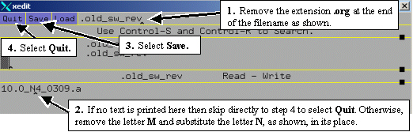
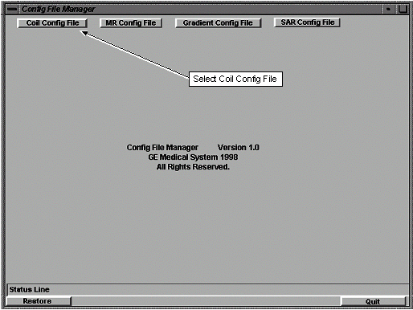
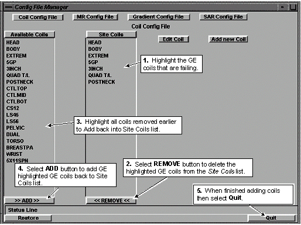

Proprietary to General Electric Company
Direction 5440000, Rev# 5
Signa HDxt Service Methods
Module Version 1.0, Version Date 5/3/07
Proprietary to General Electric Company |
This section provides information for troubleshooting reported failures from the various parameters that System In Spec evaluates. Please contact the OnLine Center or your Zone Support Engineer if you are unable to resolve the problem causing the failure.
If an SNR Test failure is reported, it means that at least one of the following was outside allowable limits: signal, noise, SNR, or TG. See the file /usr/g/service/cclass/spt/snr.spt for specifications.
| NOTE: | Be aware that the specifications used by SPT for the new head coil are different from those used for the old head coil. |
If the SNR is failing, either the signal is too low, or the noise is too high. Refer to the signal and noise sections above for guidance.
If the system has previously passed the SNR test, and no calibrations have been performed since the SNR test passed, consider the following:
If the signal is failing low, the phantom may be warm due to heating from gradients during prior testing. Try using a phantom that has been stored for the last several hours at normal room temperature (not in an unusually warm bay).
A phantom that is too cold can cause the signal to fail high. This is usually a problem only with mobile systems that have recently had phantoms exposed to winter temperature conditions.
Low signal can be caused by other system performance parameters that affect imaging physics such as shim, eddy currents, severe instabilities or faulty gradcal. Really bad RF amplifier linearity or exciter rho modulator missing bits could also degrade signal, but this is very rare.
Oscillating preamplifier(s) can cause the TNS to blank continuously or intermittently.
Faulty TNS
Head only: Failure to use new-style head quick disconnect box with built-in isolation network
Faulty preamplifier
Head only: Faulty Quick Disconnect Box
Faulty cables anywhere between the coil and receiver
Faulty T/R switch or hybrid splitter
Faulty dynamic disable bias driver or T/R switch bias driver
Faulty receiver
Faulty coil
Head only: Split halves of the new head coil are not firmly latched together
Head only: Wrong head coil type selected
If the system has previously passed the SNR test, and no calibrations have been performed since the SNR test passed, consider the following:
The screen room door is not properly closed or is faulty. The coherent noise test would also likely fail.
The lighting in the screen room is faulty. The coherent noise test would also likely fail.
The cover is open or removed from the SRI. The coherent noise test would also likely fail.
Hardware changes (usually additions) have been made that violate RF shield integrity. These could include special test cables, test equipment, etc. in the screen room without proper filtering or shielding. The coherent noise test would also likely fail.
Faulty TNS
Head only: Failure to use the new-style head quick disconnect box with built-in isolation network
Faulty preamplifier
Head only: Faulty Quick Disconnect Box
Faulty cables anywhere between the coil and receiver
The T/R switch or hybrid splitter is faulty. Try running the PIN diode noise test.
Faulty dynamic disable bias driver or T/R switch bias driver
Faulty receiver
Faulty coil
System gain may be out of calibration, especially if this is a first-time run of SPT after installing new hardware in a bay using config file values restored from a previous bay load, or if the system has not been calibrated at all.
Head only: Split halves of the new head coil are not firmly latched together
The most likely cause is RF amplifier gain calibration. If RF amplifier gain calibration is verified OK, also consider:
Head only: Failure to use new-style Head Quick Disconnect Box with built-in isolation network
Head only: Split halves of the new head coil are not firmly latched together
Head only: Wrong head coil type selected
Head only: Faulty Quick Disconnect Box
Faulty cables anywhere between the coil and RF amplifier output
Faulty T/R switch or hybrid splitter
Faulty dynamic disable bias driver or T/R switch bias driver
Faulty coil
Please refer to the EPI White Pixel Troubleshooting Guide.
Please refer to theEXCITE EPI Ghosting Problems under Troubleshooting.
If failures occur:
Run ACGD DC offsets procedure.
Check for loose metal in magnet bore.
If loose metal is not found then refer to LVshim.
Any config file failures will report a “failing” and “expected” value. Check that the system software in Guided Install is configured correctly. Correct “failing” values with “expected” values, if necessary.
Run Lcoil Calibration from Calibration on the MR Service Desktop if any failures are seen. Run it once for WHOLE and once for ZOOM if the system is a TwinSpeed.
Failing coil configuration file parameters can be easily fixed. This can be accomplished in one of two ways. If you are certain that your coil configuration file contains only coils with GE-recommended coil names, you can use the process documented in Section 6.1, Correction for CoilConfig.cfg Files With Only GE-recommended Coil Names. The advantage of this process is that it is automated and corrects coil parameter errors without changing the order of the coils in the CoilConfig.cfg file. The disadvantage is that if it finds any coils with non-GE names it will remove them from the CoilConfig.cfg file and place them in /usr/g/service/log/UnknownCoilDefs.log and /usr/g/service/log/UnknownCoilList.txt. The FE will then need to manually add them back into the CoilConfig.cfg file using the Config File Manager Tool located under Utilities on the MR Service Desktop.
Alternatively, if you know that there are coils with non-GE coil names in the CoilConfig.cfg file, you will want to use the process documented in Section 6.2, Correction for CoilConfig.cfg Files Without GE-recommended Coil Names. The advantage of using this process is that it will not remove coils with non-GE coil names from the CoilConfig.cfg file. The disadvantage is that it is not as automated as the process documented in Section 6.1 Correction for CoilConfig.cfg Files With Only GE-recommended Coil Names and it will change the order of the coils in the CoilConfig.cfg file. This means that the order of the coils in the Surface Coils pull-down menu that the customer uses to select a coil for a scan will change. Generally, if a coil is removed from the Site List and then added back in, it will be moved to the bottom of the Surface Coils pull-down list.
Open a C-shell window.
At the prompt in the C-shell window type su<ENTER>
Enter the designated root password for the system.
Type cd /usr/local/bin<ENTER>
Type xedit .old_sw_rev<ENTER>
Perform the changes shown in Illustration 1 and Illustration 2.
Type cd /usr/g/bin<ENTER>
Type coilConfigUpgrade<ENTER> to have the system automatically check for and correct any errors found in the CoilConfig.cfg file. When finished the script will print the text below:
(null)
--- See the files /usr/g/service/log/UnknownCoilDefs.log and
/usr/g/service/log/UnknownCoilList.txt ---
| NOTE: | No information will be contained in the UnknownCoilDefs.log or UnknownCoilList.txt unless coils without GE-recommended names were found in the CoilConfig.cfg file. View the contents of these files using xedit or the IRIX “more” or “cat” commands if you need to check. |
| NOTE: | If after typing coilConfigUpgrade<ENTER> the system immediately prints the software version and the execution stops, this means that the file was not correctly modified as shown in Illustration 2. Please repeat step 5 and the steps in Illustration 2 and then type coilConfigUpgrade<ENTER> |
When the script is finished then type cd /usr/local/bin<ENTER>
Restore original system file by typing cp .old_sw_rev .org .old_sw_rev<ENTER>
Illustration 1: BACK-UP OF EXISTING FILE

Illustration 2: MODIFYING FILE

Start the Configuration File Manager by following the steps on Illustration 3 below.
Illustration 3: STARTING THE CONFIG FILE MANAGER

Select Coils from MR Config File Manager as shown in Illustration 4.
Illustration 4: CONFIG FILE MANAGER MENU

| NOTE: | Do not remove coils with non-standard names (coils that are not using the GE recommended name). These coils must either have the name changed to match the GE recommended name or be manually updated if they contain configuration errors. |
Perform steps shown in Illustration 5.
Illustration 5: COIL CONFIG FILE SCREEN (TYPICAL)
